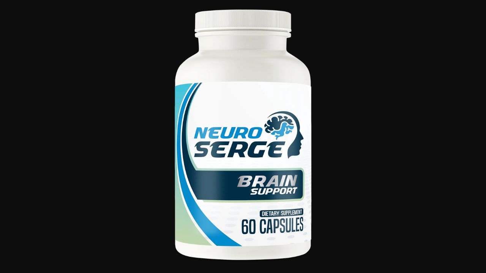

I analyzed all 20+ botanical ingredients targeting the three root causes of cognitive decline. Here's what the research actually says — and what real users over 40 are experiencing.
▶ Watch our full Neuro Serge video review before buying
Neuro Serge stands out in the crowded nootropic market for two reasons: the depth of its formula (20+ ingredients rather than the 2-3 typical of most brain supplements) and the stimulant-free delivery mechanism. Unlike caffeine-dependent products that work by forcing alertness through adrenergic stimulation, Neuro Serge targets cerebral blood flow, oxidative neuroprotection, and neurotransmitter balance simultaneously. The initial results are faster than most nootropics, and the long-term neuroprotective benefits make it genuinely valuable for adults 40+ concerned about cognitive aging.
Neuro Serge is a daily nootropic supplement formulated with 20+ botanical extracts, antioxidants, and neuro-nutrients designed to support mental clarity, focus, memory, and long-term brain health — without stimulants. It is manufactured in the United States in an FDA-registered, GMP-certified facility and contains only natural, non-GMO, gluten-free ingredients.
The formula was built around the recognition that modern cognitive decline in adults over 40 is not a single-cause problem. Brain fog, poor focus, inconsistent memory, and afternoon mental fatigue are the result of three compounding biological processes — all of which need to be addressed simultaneously for meaningful improvement. Neuro Serge's 20+ ingredient formula is specifically designed to address all three.

What impressed me most about Neuro Serge is the initial speed of results combined with the long-term neuroprotective depth of the formula. Most nootropics either work quickly (caffeine) and cause dependency, or work gradually (adaptogens) and feel invisible for months. Neuro Serge achieves both: faster initial clarity through L-Theanine and Ginkgo, and genuine long-term protection through EGCG, Olive Leaf, and Grape Seed antioxidants. That combination is unusual and genuinely valuable.
Most people experience cognitive decline as a collection of symptoms — brain fog, forgetfulness, poor concentration — without understanding the three underlying biological drivers. Neuro Serge targets all three simultaneously:
As blood vessels lose elasticity, brain regions responsible for memory and focus receive less oxygen and glucose. Ginkgo Biloba and Grape Seed Extract directly improve cerebrovascular circulation.
Free radicals accumulate and damage brain cells over time. Olive Leaf Extract, EGCG from Green Tea, and Alpha Lipoic Acid provide multi-layer antioxidant protection for neurons.
Declining GABA, serotonin, and dopamine produce anxiety, poor focus, and mood instability. L-Theanine simultaneously raises all three without stimulant dependency.
By addressing all three drivers with specific, researched ingredients, Neuro Serge creates a comprehensive cognitive support environment rather than masking symptoms with stimulation.
The Neuro Surge Blend contains 20+ ingredients. Here are the most clinically significant:
Rich in oleuropein — one of the most potent antioxidants studied specifically for brain health. Olive leaf protects neurons from oxidative damage, supports healthy blood vessel function throughout the cerebrovascular system, and helps maintain stable blood glucose levels. The brain is uniquely vulnerable to glucose instability — any fluctuation shows up immediately as mental fatigue or brain fog. Oleuropein's blood glucose stabilizing effect is a critical but often overlooked cognitive benefit.
L-Theanine is an amino acid found naturally in green tea that has become one of the most researched ingredients in cognitive science. It promotes alpha brain wave activity — the electrical pattern associated with quiet alertness and focused calm. Simultaneously, L-Theanine raises GABA (the brain's primary calming neurotransmitter), serotonin (mood regulation), and dopamine (motivation and focus). This triple neurotransmitter effect produces what users consistently describe as being "dialed in" — focused without anxiety, sharp without jitters. Combined with the Neuro Serge formula's other blood flow and antioxidant ingredients, L-Theanine creates a cognitive state most users associate with their most productive hours — available on demand, daily, without dependency.
Ginkgo Biloba is among the most studied botanicals in cognitive medicine, with decades of research across multiple countries. Its primary mechanism is cerebrovascular: ginkgo improves blood flow through the capillaries supplying brain tissue, increasing oxygen and nutrient delivery to areas responsible for working memory, concentration, and processing speed. Research suggests Ginkgo may help maintain attention span in aging adults and supports visual processing pathways. For the Neuro Serge formula, Ginkgo addresses the blood flow root cause of cognitive decline that no amount of neurotransmitter support can compensate for.
The brain runs entirely on glucose — and is acutely sensitive to instability in glucose delivery. When blood glucose spikes and crashes (a pattern common with modern diets), cognitive performance mirrors it directly: sharp focus during the spike, foggy and fatigued during the crash. Cinnamomum Cassia contains active compounds that improve insulin sensitivity and slow glucose release into the bloodstream, creating a more stable glucose delivery curve to the brain throughout the day. Users describe this as the difference between stable focus all day versus the familiar mid-afternoon cognitive wall.
Epigallocatechin gallate (EGCG) from green tea is one of the most powerful natural compounds for long-term brain health. Research shows EGCG protects neurons from the free radical accumulation that builds progressively with age — essentially acting as a cellular antioxidant shield for brain tissue. Crucially, EGCG has been shown in research to support neuroplasticity — the brain's ability to form new neural connections, which underlies learning, memory consolidation, and cognitive resilience. For adults over 40, maintaining neuroplasticity is one of the most important yet overlooked aspects of cognitive health.
Grape Seed Extract provides oligomeric proanthocyanidins (OPCs) — powerful antioxidants that specifically protect blood vessel walls from oxidative damage. In the brain context, this means protecting the small capillaries that feed neural tissue from the deterioration that reduces blood flow over time. Combined with Ginkgo Biloba's direct vasodilatory effects, Grape Seed Extract works to maintain the vascular health that cognitive performance depends on as we age.
This group of metabolic support ingredients works collectively to maintain the stable blood glucose environment that cognitive performance requires. Berberine activates AMPK and improves insulin sensitivity. Alpha Lipoic Acid (ALA) is a mitochondrial antioxidant that supports cellular energy production in neurons. Taurine supports neurotransmitter regulation and protects against excitotoxicity. Chromium improves glucose uptake efficiency. Mulberry Leaf, Banaba Leaf, and Gymnema slow carbohydrate absorption — collectively reducing the post-meal glucose spikes that produce afternoon brain fog.
As cerebral blood flow begins improving and L-Theanine establishes alpha wave patterns, most users report feeling slightly more "present" and awake in the mornings. The harsh edges of afternoon fatigue start to soften. The changes are subtle — not dramatic — which is actually a sign the formula is working through natural pathways rather than stimulant force.
By week two, most users report the change that defines Neuro Serge's early reputation: focus feels smoother and more consistent. Less scattered thinking, better ability to work longer without mental drainage, clearer recall during conversation. The cognitive state feels more reliable — available when needed rather than variable and unpredictable.
With antioxidant protection now established and neuroplasticity support active, memory recall improves. Users in this phase describe sharper everyday memory — names, appointments, details that previously slipped. Cognitive resilience under stress improves. Family members often notice increased alertness and engagement before users mention they're taking a supplement.
The antioxidant defenses are fully active, protecting neurons from ongoing damage. Memory recall is sharp and reliable. Users describe a return of their "mental edge" — the sustained productivity that felt natural in their 30s but had gradually diminished. The cognitive state feels entirely natural rather than supplemented.
"I didn't notice a dramatic kick on day one, and that's actually what impressed me. After about two weeks with Neuro Serge, my focus felt smoother and more consistent. I can work longer without feeling mentally drained, and my thoughts feel clearer instead of scattered. At 71, I had started noticing reduced focus and afternoon mental fatigue. This has genuinely improved my daily quality of life."
"Within a few weeks, I experienced reduced brain fog and better memory for everyday tasks — paying bills, scheduling appointments, grocery shopping without forgetting half the list. My family mentioned I seemed more alert and engaged. I appreciate that it's caffeine-free. I've tried other nootropics that left me jittery and anxious. This is clean, natural energy."
"I was skeptical — I'd tried several brain supplements that didn't deliver. Neuro Serge took about 3 weeks before I noticed consistent improvement. My afternoon mental fatigue is significantly reduced. I can have productive meetings at 4pm now instead of feeling like I'm running on empty. The improvement in focus during deep work has been meaningful."
180-Day Guarantee · Made in USA · GMP Certified · 20+ Ingredients · Stimulant-Free
→ Visit Official Neuro Serge WebsiteThe 6-bottle package aligns with the 3-6 month optimal use period where full neuroprotective benefits develop. It provides coverage for the 180-day guarantee period and offers the best per-bottle value.
GMP Certified · Made in USA · 20+ Botanicals · Stimulant-Free · 180-Day Guarantee
→ Get Neuro Serge at the Official PriceAffiliate Disclosure: This review contains affiliate links. If you purchase through our links, we may earn a commission at no additional cost to you. This does not influence our analysis. See our full Affiliate Disclosure. The statements on this page have not been evaluated by the FDA. This product is not intended to diagnose, treat, cure, or prevent any disease. Always consult your healthcare provider before starting any supplement.